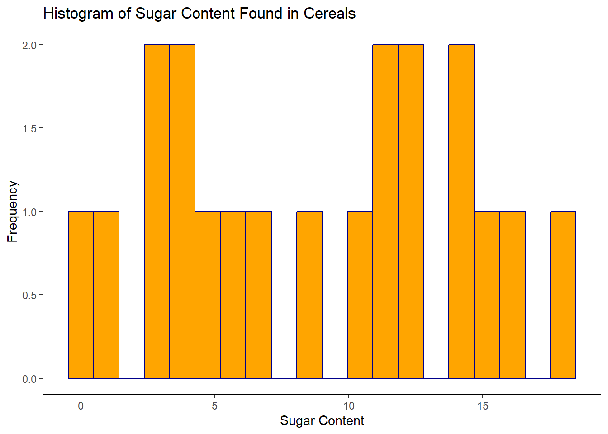
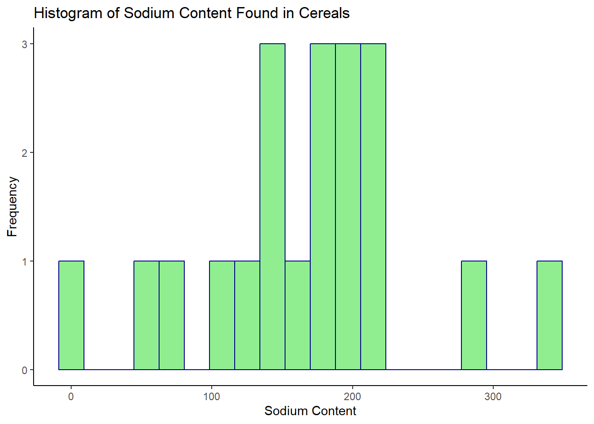
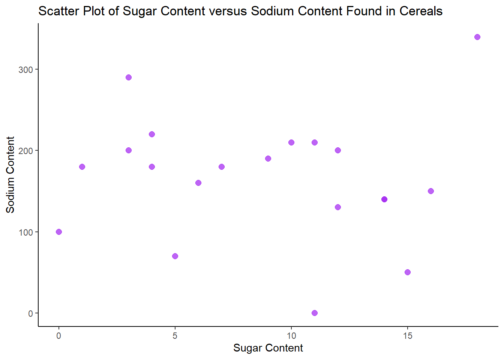
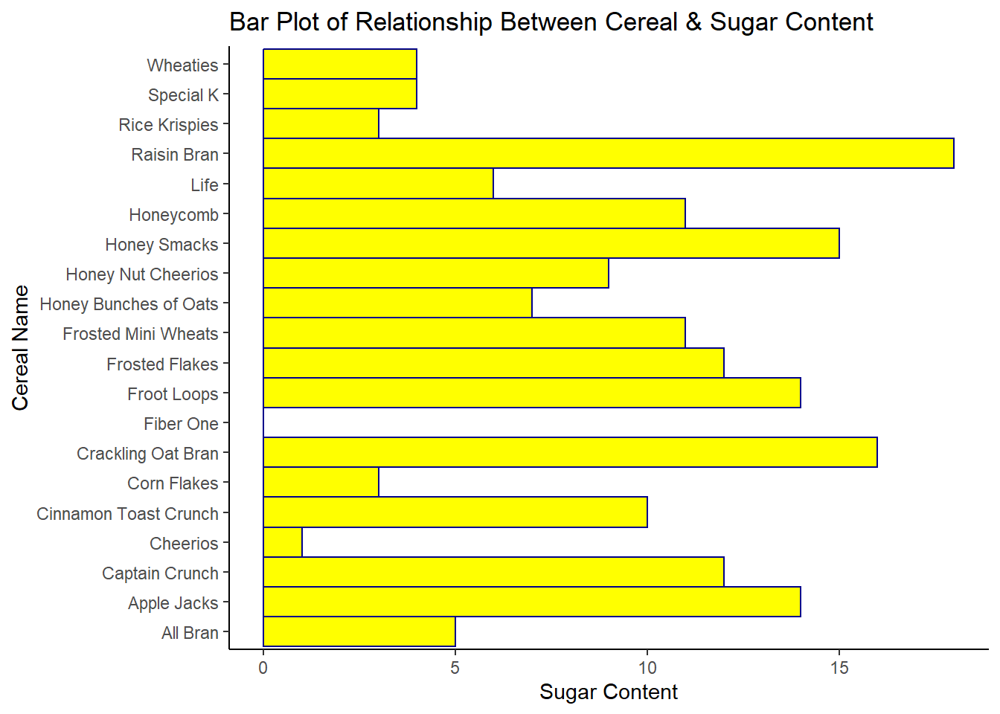

library(tidyverse)
library(ggplot2)
library(readr)
library(readxl)
library(dplyr)
knitr::opts_chunk$set(echo = TRUE, warning=FALSE, message=FALSE)Challenge 5 Post
challenge_5
cereal
Introduction to Visualization
Challenge Overview
Today’s challenge is to:
- read in a data set, and describe the data set using both words and any supporting information (e.g., tables, etc)
- tidy data (as needed, including sanity checks)
- mutate variables as needed (including sanity checks)
- create at least two univariate visualizations
- try to make them “publication” ready
- Explain why you choose the specific graph type
- Create at least one bivariate visualization
- try to make them “publication” ready
- Explain why you choose the specific graph type
R Graph Gallery is a good starting point for thinking about what information is conveyed in standard graph types, and includes example R code.
(be sure to only include the category tags for the data you use!)
Read in data
Read in one (or more) of the following datasets, using the correct R package and command.
- Today, I’ll be reading in cereal.csv ⭐
cereal <- read_csv("_data/cereal.csv")
cerealdim(cereal)[1] 20 4Briefly describe the data
This dataset provides some nutritional information about different types of cereals. From the dim() function, we see that there are 4 columns/variables and 20 rows. From that we can infer that 20 cereals are featured in this dataset. Cereal (name) and Type (A or C) have character values. At the moment, I am not sure what Type A and Type C stands for–it could mean the difference between two different cereal box sizes, containing or not containing a certain ingredient (i.e., tree nuts) or something like being an eligible vs ineligible item within federal nutrition assistance programs like SNAP, WIC, and TANF…or mean something different altogether. Whereas Sodium and Sugar variables, assumingly measuring in grams, contain numeric values that enumerate the sodium and sugar content in the respective cereals.
Tidy Data (as needed)
Is your data already tidy, or is there work to be done? Be sure to anticipate your end result to provide a sanity check, and document your work here.
The cereal dataset is already tidy. Each variable has its own column. Each observation has its own row, and each value has its own cell.
Mutating Variables
Are there any variables that require mutation to be usable in your analysis stream? For example, do you need to calculate new values in order to graph them? Can string values be represented numerically? Do you need to turn any variables into factors and reorder for ease of graphics and visualization?
We can change the Type variable’s values A and C into being represented numerically as 1 and 2. A can become 1, and C can become 2
#changing Type values A and C into being represented numerically as 1 and 2
cereal2 <- cereal %>%
mutate(Type = recode(Type, A = "1"),
Type = recode(Type, C = "2"))
cereal2#checking to see if the renaming A and C into 1 and 2 worked
unique(cereal2$Type)[1] "1" "2"Looks like Type variable values A and C are now successfully represented numerically as 1 and 2!
Univariate Visualizations
Sugar Content Found in Cereals
# Univariate Visualization 1
#Histogram for Sugar Content Found in Cereals
ggplot(cereal2, aes(x= Sugar)) +
geom_histogram(color= "darkblue", fill= "orange", bins=20)+
labs(title = "Histogram of Sugar Content Found in Cereals", x= "Sugar Content", y= "Frequency") +
theme_classic()
Sodium Content Found in Cereals
# Univariate Visualization 2
#Histogram for Sodium Content Found in Cereals
ggplot(cereal2, aes(x= Sodium))+
geom_histogram(color= "darkblue", fill= "lightgreen", bins=20)+
labs(title = "Histogram of Sodium Content Found in Cereals", x= "Sodium Content", y= "Frequency") +
theme_classic()
I decided to use a histogram for the univariate visualizations because Tutorial 6 noted that “Histograms are useful when you are measuring the distribution of a single numeric variable” (DACSS 601 Instructional Staff, Tutorial 6). This visual seemed fitting because in the dataset, both Sugar and Sodium are numeric variables, and in univariate visualizations, we are dealing with the distribution of a single (or one) variable. I labeled the y-axis “Frequency” because this is a title I commonly see in histograms used in websites, presentations, publications, etc. Essentially it means the ‘frequency’ or amount of times a numeric value appears in the dataset. So, for example, we can see on the sodium histogram, that a cereal with a sodium content value of 0 (again the unit of measurement was not disclosed), has a frequency of 1, which means that in the dataset, there’s only one cereal with a sodium content value of 0. If we scroll back up a version of the data in the table format, which can be found in earlier sections of this post, we can see that this is the Frosted Mini Wheats cereal. The sugar histogram shows that a little less than half of the cereals included in this dataset have a sugar content value between 10 and 15. The sodium histogram shows that most cereals have a sodium content value between 100 and a little over 200.
Bivariate Visualization(s)
Sugar Content Distributed Alongside Sodium Content
# bivariate visualization 1
# Scatter Plot of Sugar Content Distributed Alongside Sodium Content Found in Cereals
ggplot(cereal2, aes(x= Sugar, y= Sodium))+
geom_point(alpha= 0.7, size= 2.5, color= "purple")+
labs(title="Scatter Plot of Sugar Content versus Sodium Content Found in Cereals", x= "Sugar Content", y= "Sodium Content")+
theme_classic()
I used a Scatter Plot to visualize Sugar Content distributed alongside Sodium Content found in Cereals because the R Graph Gallery notes that scatter plots are useful to depict “the relationship between 2 numeric variables” (Holtz, 2018). As stated previously, both Sodium and Sugar are numeric variables within the dataset. Overall, there is not a clear positive or negative correlation between sugar content and sodium content in cereals, but there are a few outliers.
Relationship between Cereal (name) and Sugar Content
# bivariate visualization 2
# Bar Plot to show relationship between Cereal (name) and Sugar Content
ggplot(cereal2, aes(x= Cereal, y= Sugar))+
geom_bar(stat= "identity", color= "darkblue", fill= "yellow", width = 1)+
labs(title = "Bar Plot of Relationship Between Cereal & Sugar Content", x= "Cereal Name", y= "Sugar Content")+
coord_flip()+
theme_classic()
I used a Bar Plot to capture the relationship between Cereal (name) and Sugar Content to visually showcase which cereals have the highest sugar content. This visual may be helpful for consumers who are shopping for cereals while being mindful of sugar content. The cereals named Raisin Bran and Crackling Oat Bran, from name alone seems like healthier options one could assume to have less sugar than Frosted Flakes or Frosted Mini Wheats but the Bar Plot clearly demonstrates that this is not the case. However, this dataset only accounts for one sodium content measure and one sugar content measure–we do not know if this is a measure of natural sugars, artificial sugars, or a combination of both–which may contribute to Raisin Bran and Crackling Oat Bran having higher sugar counts. Research confirms that raisins are naturally high in sugar (Shortsleeve, 2019). Bar Plots are a fitting visual in this case because of their capacity to “display the relationship between a numeric and categorical variable” (Holtz, 2018). As stated previously, Cereal (name) is a categorical variable and Sugar is numeric variable. I used the coord_flip() function to turn it into a horizontal bar chart because the cereal names were smushed together and rendered illegible in the basic bar plot format.
References
Holtz, Y. (2018). Barchart | the R Graph Gallery. https://r-graph-gallery.com/barplot.html
Holtz, Y. (2018). Basic barplot with ggplot2. https://r-graph-gallery.com/218-basic-barplots-with-ggplot2.html#horiz
Holtz, Y. (2018). Boxplot | the R Graph Gallery. https://r-graph-gallery.com/scatterplot.html
Shortsleeve, C. (2019, February 20). Are raisins healthy? Here’s what experts say. Time. https://time.com/5525636/are-raisins-healthy/#Are%20Raisins%20High%20in%20Sugar?
DACSS 601 Instructional Staff. (n.d.). Tutorial 6: intro to visualization. Google Classroom. UMass Amherst. https://dacss.shinyapps.io/601_IntroVisualization/